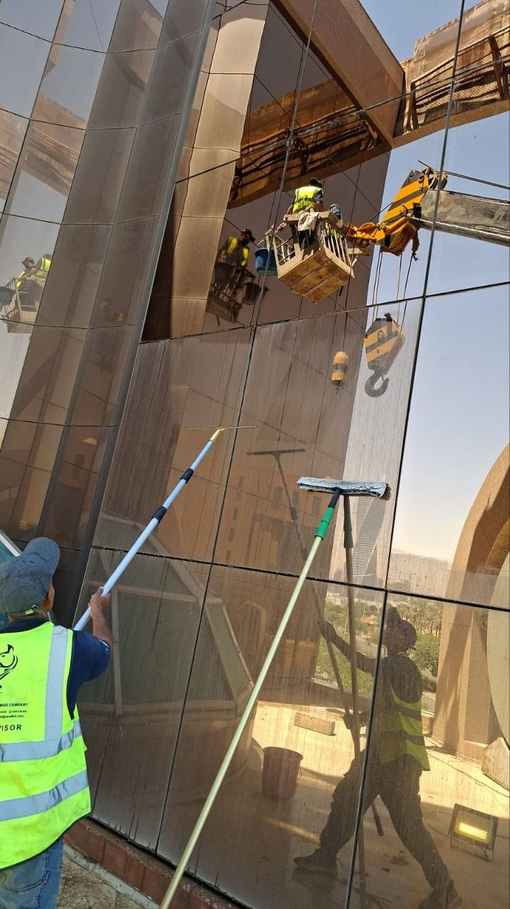

تحتل فروع البنوك موقعاً مميزاً في الشوارع الرئيسية والأحياء التجارية بمدينة الرياض، ولهذا فإن نظافة واجهاتها الزجاجية تعكس بشكل مباشر مستوى الثقة والاحترافية التي يبحث عنها العملاء عند زيارة الفرع. ولهذا يبحث الكثير من مديري الفروع ومسؤولي الصيانة عن شركة تنظيف واجهات بنوك تمتلك الخبرة الكافية للتعامل مع طبيعة هذه المباني الحساسة.
وتختلف واجهات البنوك عن غيرها من المباني التجارية، إذ تجمع غالباً بين الزجاج العاكس والألوميتال والحجر، بالإضافة إلى اللوحات الإعلانية والشعارات البارزة التي تحتاج إلى دقة خاصة أثناء التنظيف حتى لا تتأثر بأي خدوش أو مواد غير مناسبة. ولهذا تُعد جهة تنظيف مؤهلة وذات خبرة أمراً ضرورياً لهذا النوع من المباني.
ومن هذا المنطلق تقدم شركة حلول وتميز للتنظيف بالرياض خدمة متخصصة في تنظيف واجهات فروع البنوك، بالاعتماد على معدات حديثة وفريق مدرب على التعامل مع مختلف مواد التشطيب دون التأثير على مظهرها الاحترافي.
وتحرص شركة حلول وتميز للتنظيف على تنفيذ أعمال التنظيف بما يتناسب مع طبيعة عمل الفروع البنكية، من حيث المواعيد ومستوى الالتزام بمعايير السلامة والهدوء أثناء التنفيذ لعدم إزعاج العملاء أو الموظفين داخل الفرع.
فريق حلول وتميز أثناء تنظيف واجهة زجاجية لأحد فروع البنوك بالرياض باستخدام رافعة هيدروليكية
ما الذي يميز تنظيف واجهات البنوك عن غيرها؟
تتطلب واجهات البنوك مستوى أعلى من الدقة والاحترافية مقارنة بالمباني التجارية العادية، نظراً لحساسية الموقع وارتباطه المباشر بثقة العملاء في المؤسسة المالية. ولهذا تعتمد شركة تنظيف واجهات بنوك على معايير خاصة تشمل:
- الحفاظ على شفافية الزجاج العاكس دون ترك أي آثار أو خطوط
- التعامل بحذر مع اللوحات الإعلانية وشعارات البنك البارزة
- تنسيق مواعيد التنفيذ خارج أوقات الذروة قدر الإمكان
- الالتزام الكامل بمعايير السلامة أثناء العمل أمام واجهة الفرع
- استخدام محاليل لا تترك أي رائحة داخل صالة العملاء
ولهذا يفضل الكثير من مديري الفروع التعاقد مع جهة موثوقة وذات سجل تجاري واضح، بدلاً من الاستعانة بعمالة غير متخصصة قد تتسبب في أضرار يصعب إصلاحها لاحقاً.
لماذا تحتاج فروع البنوك إلى تنظيف دوري منتظم؟
على عكس بعض المباني الأخرى، لا تحتمل فروع البنوك أي تأخير في مواعيد الصيانة الدورية، نظراً لحركة العملاء اليومية المستمرة التي تجعل أي إهمال في النظافة ظاهراً بشكل سريع للجميع.
الحفاظ على الصورة الذهنية للبنك
تعتبر واجهة الفرع أول ما يراه العميل قبل الدخول، ولهذا فإن نظافتها تنعكس مباشرة على انطباعه عن مستوى الخدمة داخل الفرع.
التعرض المستمر للغبار والعوادم
تقع أغلب فروع البنوك على شوارع رئيسية مزدحمة، مما يجعل واجهاتها عرضة لتراكم الغبار والعوادم بمعدل أسرع من المباني السكنية.
الحفاظ على قيمة العقار
تُعد أغلب مباني البنوك عقارات مستأجرة أو مملوكة بقيمة كبيرة، ولهذا فإن الصيانة الدورية للواجهة تحافظ على قيمتها الاستثمارية على المدى الطويل.
متطلبات الفروع متعددة الطوابق
تحتوي بعض الفروع الرئيسية والمقرات الإدارية للبنوك على عدة طوابق تحتاج إلى معدات رفع متخصصة يوفرها فريق شركة تنظيف واجهات بنوك ذو خبرة.
خطوات تنفيذ خدمة تنظيف واجهات البنوك
تعتمد شركة حلول وتميز للتنظيف على منهجية دقيقة ومدروسة عند تنفيذ أعمال تنظيف واجهات فروع البنوك، بحيث يتم ضمان أفضل نتيجة دون أي تأثير على سير العمل داخل الفرع. وتشمل خطوات شركة تنظيف واجهات بنوك ما يلي:
- التنسيق المسبق مع إدارة الفرع لتحديد الموعد الأنسب للتنفيذ
- معاينة الواجهة وتحديد نوع المواد المستخدمة فيها
- تجهيز معدات الرفع أو الكرابل حسب ارتفاع المبنى
- تنظيف الزجاج والألوميتال بمحاليل مخصصة وآمنة
- تلميع الأسطح الخارجية لإظهار أفضل مظهر ممكن
- فحص نهائي للواجهة والتأكد من نظافتها الكاملة
وبهذه الخطوات المنظمة تضمن شركة حلول وتميز للتنظيف تسليم واجهة نظيفة بالكامل تعكس الصورة الاحترافية للفرع البنكي، دون أي تأثير على راحة العملاء أو الموظفين أثناء التنفيذ.
💡 ملاحظة مهمة: تحرص شركة تنظيف واجهات بنوك محترفة على تنفيذ أعمال التنظيف في أوقات هادئة، مثل ساعات الصباح الباكر أو بعد إغلاق الفرع، لتجنب أي إزعاج للعملاء أو تعطيل لحركة العمل اليومية.

استخدام أدوات تنظيف متخصصة لإزالة الأتربة عن واجهة زجاجية لأحد فروع البنوك بالرياض
معدات وأدوات تنظيف واجهات البنوك
يعتمد نجاح عملية تنظيف واجهات فروع البنوك بشكل كبير على جودة المعدات المستخدمة، ولهذا تعتمد شركة حلول وتميز للتنظيف على مجموعة متكاملة من الأدوات المتخصصة، تشمل:
الرافعات الهيدروليكية
تستخدم للوصول إلى الواجهات المرتفعة للفروع والمقرات الإدارية بأمان تام وسرعة في التنفيذ.
معدات الكرابل
تُستخدم في المباني الشاهقة التي لا تسمح مساحتها الأرضية باستخدام رافعات كبيرة.
ممسحات الزجاج المتخصصة
أدوات مصممة خصيصاً لتنظيف الزجاج العاكس دون ترك خطوط أو آثار بعد الجفاف.
محاليل تنظيف آمنة وخالية من الرائحة
مناسبة للاستخدام بالقرب من صالات العملاء دون التأثير على الأجواء الداخلية للفرع.
وبفضل هذه المعدات المتخصصة، رسخت شركة حلول وتميز للتنظيف اسمها كإحدى أبرز شركات تنظيف واجهات بنوك التي يعتمد عليها مديرو الفروع في الرياض لتنفيذ أعمال دقيقة وموثوقة.
شركة تنظيف واجهات بنوك للمقرات الرئيسية والأبراج الإدارية
لا تقتصر خدمات شركة تنظيف واجهات بنوك على الفروع الصغيرة فقط، بل تمتد لتشمل المقرات الرئيسية والأبراج الإدارية الكبيرة التي تحتاج إلى فرق عمل متعددة ومعدات رفع احترافية. وتشمل هذه الخدمات:
- تنظيف واجهات الأبراج الإدارية التابعة للبنوك
- تنظيف اللوحات الإعلانية الكبيرة وشعارات البنك على الواجهة
- الصيانة الدورية لواجهات مراكز البيانات والمقرات الفرعية
- تنظيف مداخل الفروع الزجاجية وأبواب الدخول الرئيسية
وتحرص شركة حلول وتميز للتنظيف على تخصيص فريق عمل مناسب لحجم كل مشروع، بما يضمن إنجاز العمل خلال فترة زمنية قصيرة دون التأثير على الجدول الزمني لأنشطة الفرع أو المقر الإداري.
عوامل تحديد تكلفة خدمة تنظيف واجهات البنوك
تختلف تكلفة خدمة شركة تنظيف واجهات بنوك من مشروع لآخر بناءً على عدة عوامل رئيسية، ولهذا تحرص شركة حلول وتميز للتنظيف على معاينة الموقع ميدانياً قبل تحديد السعر النهائي بدقة تامة.
- مساحة الواجهة الإجمالية وعدد الطوابق
- نوع المواد المستخدمة في الواجهة (زجاج، ألوميتال، حجر)
- الحاجة إلى معدات رفع أو كرابل حسب ارتفاع المبنى
- مدى تكرار الخدمة (زيارة واحدة أو عقد صيانة دورية)
- الموقع الجغرافي للفرع داخل مدينة الرياض
وتوفر شركة تنظيف واجهات بنوك عروض أسعار واضحة بعد المعاينة المباشرة، مع الحرص التام على الشفافية مع العميل قبل بدء التنفيذ، دون أي رسوم إضافية غير متوقعة بعد الاتفاق المبدئي على السعر.
عقود الصيانة الدورية لفروع البنوك
يفضل الكثير من مديري الفروع والمقرات الإدارية التعاقد بشكل دوري مع شركة تنظيف واجهات بنوك بدلاً من الاكتفاء بخدمة لمرة واحدة، وذلك لضمان بقاء الواجهة نظيفة على مدار العام دون الحاجة لتنسيق مشروع جديد في كل مرة.
وتوفر شركة حلول وتميز للتنظيف عقود صيانة مرنة تُصمم بناءً على طبيعة كل فرع، مع إمكانية جدولة الزيارات في أوقات مناسبة لا تؤثر على حركة العملاء أو سير العمل اليومي داخل الفرع. كما تشمل هذه العقود فحصاً دورياً لحالة الفواصل والسيليكون بين ألواح الزجاج للتنبيه المبكر لأي مشكلة قد تحتاج إلى صيانة إضافية.
مناطق تغطية خدمة تنظيف واجهات البنوك بالرياض
تقدم شركة تنظيف واجهات بنوك خدماتها في جميع أحياء ومناطق العاصمة، حيث يغطي فريق حلول وتميز مناطق واسعة تشمل:
ويتيح هذا الانتشار الواسع لـ شركة حلول وتميز للتنظيف الاستجابة السريعة لطلبات الفروع البنكية في أي منطقة بالرياض، مع توفير فرق متخصصة قادرة على تنفيذ عدة مشاريع في وقت واحد دون تأخير.
لماذا يثق مديرو الفروع في فريق العمل؟
على مدار سنوات من العمل في مجال تنظيف الواجهات التجارية، اكتسب فريق شركة تنظيف واجهات بنوك خبرة عملية واسعة في التعامل مع طبيعة المباني البنكية الحساسة، من حيث الدقة في التنفيذ والالتزام بالمواعيد المتفق عليها مسبقاً.
ويحرص الفريق على التنسيق الكامل مع إدارة كل فرع قبل بدء العمل، لضمان عدم التأثير على حركة العملاء أو سير العمل اليومي، مع الالتزام بمعايير سلامة صارمة أثناء استخدام معدات الرفع أو الكرابل أمام واجهة الفرع.
كما يوفر فريق شركة حلول وتميز للتنظيف تقارير دورية لإدارات الفروع توضح حالة الواجهة وأي ملاحظات فنية قد تحتاج إلى متابعة، مثل تلف بسيط في الإطارات أو الفواصل، بما يساعد الإدارة على اتخاذ إجراءات وقائية مبكرة قبل تفاقم أي مشكلة تؤثر على مظهر الفرع.
ولا يقتصر التعامل مع الفريق على الفروع الفردية فقط، بل يشمل أيضاً التنسيق مع الإدارات المركزية للبنوك التي تدير عدة فروع في مناطق مختلفة من الرياض، حيث يتم وضع جدول زمني موحد لصيانة جميع الفروع بما يضمن اتساق المظهر العام لجميع فروع البنك في مختلف الأحياء.
معايير اختيار الجهة المناسبة لتنظيف واجهات الفروع البنكية
قبل التعاقد مع أي جهة لتنفيذ أعمال تنظيف الواجهة، من المهم التأكد من عدة معايير أساسية تضمن جودة التنفيذ وسلامة الفرع أثناء العمل. وتحرص حلول وتميز للتنظيف على توضيح هذه المعايير لعملائها قبل بدء أي مشروع:
- وجود سجل تجاري رسمي وشفافية كاملة في التعاقد والأسعار
- خبرة موثقة في التعامل مع مباني ذات طابع مؤسسي وحساس
- معدات وحبال حديثة تخضع للفحص الدوري المنتظم
- تأمين ساري المفعول يغطي فريق العمل أثناء التنفيذ
- مرونة في تنسيق المواعيد بما يتناسب مع دوام الفرع
ويساعد الاطلاع على هذه المعايير مديري الفروع والإدارات المركزية في اتخاذ قرار مدروس عند اختيار الجهة المناسبة، بدلاً من الاعتماد فقط على السعر الأقل الذي قد يخفي وراءه نقصاً في الخبرة أو معدات السلامة اللازمة للتعامل مع واجهات المباني المؤسسية.
نصائح للحفاظ على مظهر واجهة الفرع بين الزيارات
بالإضافة إلى الاستعانة بجهة متخصصة للتنظيف الدوري، هناك بعض النصائح البسيطة التي تساعد إدارة الفرع على الحفاظ على مظهر الواجهة نظيفاً لأطول فترة ممكنة بين كل زيارة وأخرى:
- تجنب لصق أي ملصقات أو إعلانات مباشرة على سطح الزجاج الرئيسي
- التأكد من تصريف مياه الأمطار بشكل جيد بعيداً عن الواجهة الزجاجية
- إبلاغ الجهة المسؤولة فوراً عن أي بقع أو أضرار موضعية تظهر بين الزيارات
- وضع جدول صيانة سنوي ثابت بدلاً من الانتظار حتى تظهر الحاجة الملحة للتنظيف
وقد ساهمت هذه الممارسات في مساعدة العديد من الفروع على تقليل تكرار مشكلات التلوث الموضعي، والحفاظ على مظهر لائق للواجهة بين مواعيد الصيانة الدورية المجدولة مسبقاً مع الجهة المتخصصة.
الأسئلة الشائعة حول تنظيف واجهات البنوك
الخاتمة
إذا كنت تدير فرعاً بنكياً أو مقراً إدارياً في الرياض وتبحث عن شركة تنظيف واجهات بنوك تجمع بين الدقة والخبرة والالتزام بالمواعيد، فإن شركة حلول وتميز للتنظيف توفر لك فريقاً مدرباً ومعدات حديثة لتنفيذ العمل باحترافية عالية دون أي تأثير على سير العمل داخل الفرع.
وسواء كنت تحتاج إلى خدمة تنظيف واجهات لتنفيذ مهمة تنظيف لمرة واحدة، أو تبحث عن عقد صيانة دورية يحافظ على مظهر جميع فروعك على مدار العام، فإن فريق العمل يمتلك الخبرة والمعدات المناسبة لتحقيق أفضل النتائج بأعلى معايير السلامة والاحترافية.
وتواصل شركة حلول وتميز للتنظيف تقديم خدماتها في جميع أحياء الرياض بالاعتماد على أحدث المعدات وأساليب العمل الحديثة، بينما يواصل فريق شركة تنظيف واجهات بنوك تنفيذ مشاريع الفروع والمقرات الإدارية باحترافية عالية ونتائج تمنح واجهات البنوك مظهراً نظيفاً ولامعاً يعكس الثقة والجودة أمام العملاء.
وفي النهاية، تبقى نظافة واجهة الفرع البنكي انعكاساً مباشراً لمستوى الاهتمام بالتفاصيل والجودة التي يقدمها البنك لعملائه، ولهذا فإن الاستثمار في خدمة متخصصة لتنظيف الواجهات ليس مجرد إجراء تجميلي، بل خطوة عملية تعزز الصورة الذهنية للمؤسسة المالية وتحافظ على قيمة العقار على المدى الطويل. لمزيد من الاستفسارات أو لحجز موعد المعاينة، يمكن التواصل مباشرة عبر الاتصال أو الواتساب في أي وقت.
ويظل اختيار جهة مؤهلة ومدربة على أعلى معايير الجودة هو الفيصل الحقيقي في نجاح أي مشروع تنظيف لواجهات الفروع البنكية، بغض النظر عن حجم الفرع أو موقعه داخل الرياض. وتحرص شركة حلول وتميز للتنظيف على تطوير أساليب عملها باستمرار بما يتناسب مع أحدث المعايير العالمية في مجال صيانة وتنظيف الواجهات التجارية، لضمان تقديم تجربة متكاملة تجمع بين الجودة والاحترافية والالتزام الكامل بالمواعيد المتفق عليها مع كل عميل.
وتبقى العلاقة طويلة المدى بين الفريق المنفذ وإدارة الفرع أحد أهم عوامل النجاح في هذا النوع من الخدمات، حيث يساعد التعامل المستمر مع نفس الفريق على فهم أدق لتفاصيل كل مبنى ونوع المواد المستخدمة في واجهته، مما يقلل من وقت المعاينة في كل زيارة ويسرّع من وتيرة التنفيذ مقارنة بالتعامل مع جهة جديدة في كل مرة. كما يتيح ذلك التنبؤ المسبق بأي مشكلات متوقعة بناءً على الخبرة المتراكمة من الزيارات السابقة لنفس الموقع.